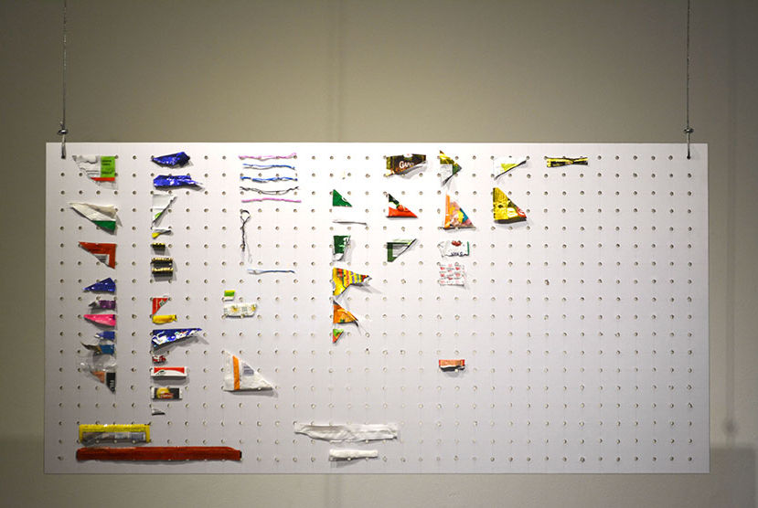
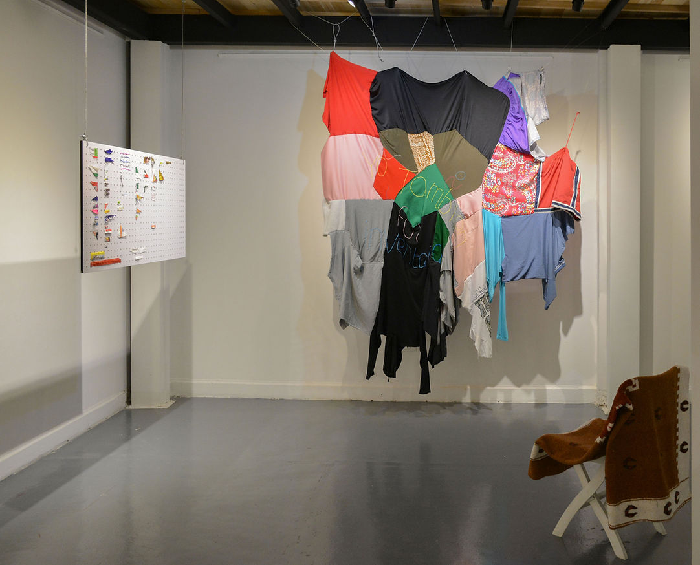

cuerpo Residual
2020
Bogotá.
En esta muestra, lo que representa el cuerpo es algo que cree que se sabe a él mismo, pero se busca en acciones, roles, nombres, definiciones y formas. El cuerpo que se sabe y se conoce, se inserta en lugares que le permiten explorar por medio de símbolos y de la experiencia misma; opera como un objeto que busca resignificaciones y le da la vuelta al sentido de lo que su contexto le dicta, y es precisamente en este saberse, que se sale y se regenera.
Esta pieza reúne 50 esquinas de empaques que “sobraban” al ser destapados. Se ubican sobre este retablo perforado y recuerdan las tablas que se usan en las ferreterías para exhibir diferentes tuercas y elementos pequeños.


Sin título. Prendas cosidas a mano, guaya. 2018.